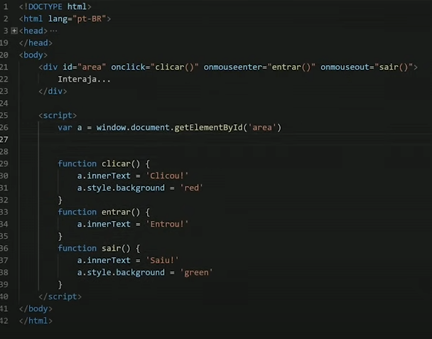

Olá Mundo
Já quebrei a maldição
Alertas
Window alert é uma função que exibe uma mensagem de alerta na tela.
Window confirm é uma função que exibe uma mensagem de confirmação na tela.
Window prompt é uma função que exibe uma mensagem de prompt na tela.
Variaveis
Variaveis são espaços na memória do computador que armazenam valores. São
chamadas de var ou let.
Elas são como vagas e guardam informações que podem ser usadas no
programa.
Elas são como uma caixa onde guardo coisas.
Exemplo:
var nome = 'João'
var idade = 20
var cidade = 'São Paulo'
Data types
elas podem conter numeros (positivos, negativos, decimais)
Infinity = Infinito
NAN = Not a Number
elas podem conter texto (strings)
elas podem conter valores boolean (true, false)
elas podem ser do tipo null (não tem valor)
elas podem conter objects (conjunto de valores)
elas podem conter arrays (lista de valores)
Typeof
O typeof é uma função que retorna o tipo de dado de uma variável.
Exemplo:
typeof nome = 'string'
typeof idade = 'number'
typeof cidade = 'string'
o Sinal de Igual
O sinal de igual é usado para atribuir um valor a uma variável.
O símbolo de igual quer dizer RECEBE e não igual.
Se eu quero dizer que algo é IGUAL a outro, uso o símbolo de igual duplo.
Exemplo:
var nome = 'João'
var nome == 'Maria'
Sinais identificadores
São usados para identificar o nome da variável.
Podem começar com letras, NÃO COM NUMEROS, NÃO COM ESPAÇOS, NÃO COM
CARACTERES ESPECIAIS.
Para substituir o espaço eu uso o underline.
Exemplo:
var nome_completo = 'João da Silva' não posso usar palavras reservadas.
Exemplo:
alert, var, let, const, function, if, else, while, for, etc.
Porque ja são usadas para outras coisas.
Maiúsculas e minúsculas fazem diferença. Devo me lembrar de usar o mesmo
padrão.
è interessante usar nomes que façam sentido com o que a variável guarda.
Node JS
Node JS é um ambiente de execução de JavaScript fora do navegador.
Ele permite executar JavaScript fora do navegador, como em servidores, e
fornece uma API para interagir com o sistema operacional.
Para usar o Node js dentro do Cursor ou VSCode, eu abro o terminal e
digito node.
Para sair, digito .exit.
Para abrir o terminal aqui eu em terminal ali em cima ou uso o atalho ctrl
+ shift + '
Conversão de tipos
O JavaScript é uma linguagem de tipagem dinâmica, o que significa que as
variáveis podem conter diferentes tipos de dados em diferentes momentos.
A conversão de tipos ocorre quando o JavaScript precisa converter um tipo
de dado para outro para realizar uma operação.
Exemplo:
Para que eu transforme valor de texto (string) em um numero eu uso Parseint para numero inteiro e Parsefloat para decimal, ou posso usar Number(conteudo da string)
Se eu quero converter para string, uso o String na frente da variavel.
Exemplo:
var n1 = 10
n1.toString()
ou posso usar string(n1)
Assim, ele converte 10, que é o valor da variavel n1, para string ao invés de number.
Posso usar o Tofixed() para escrever numeros depois da virgula e definir quantas casas decimais dentro do ()
Template Strings
O template strings é formado por $ e {}.
Ele serve para substituir o valor de uma variavel em uma string de maneira
que eu nao precise usar o sinal de + para concatenar os valores de
variávies distintas.
Para isso, eu abro aspas (``), escrevo a frase que quero dentro delas e quando eu quiser colocar a variavel em algum lugar eu uso &{nome da variavel}
Operadores
Permitem realizar operações com as variáveis e possuem alguns tipos como:
- Aritméticos (), **, *, /, %, + e - (nessa ordem de precedência)
% é o resto da divisão inteira (o que sobra antes de começar a virgula na divisão) e ** é potencia (numero elevado)
- atribuição - São substituições que eu faço na minha operação (como escalonamento em matemática)
- Relacionais - >, <, >=, <=, == e != (resultam em boolean = verdadeiro ou falso) (posso fazer essas comparações com strings tb) e não possuem precedência.
- Identidade - identificam se uma valor é exatamente igual ao outro. Pra isso eu uso ===
- Lógicos - ! é negação, && (um e outro) conjunção (eu preciso que os dois sejam verdadeiros) e ||(um ou outro) é disjunção (um ou outro precisa ser verdadeiro) seguindo esta ordem de precedência
exemplificando tudi em uma função:
salário >= 2000 && sexo != 'mulher' --> o salário é maior ou igual a dois mil e o sexo não é uma mulher. Ou seja, homens que ganham no mínimo 2000
- Ternário - ? e : dentro de uma mesma operação - Eu faço uma pergunta e defino as opções que podem aparecer se for verdadeiro ou falso, nesta ordem. O primeiro valor é se a resposta for sim e o segundo se for não
Exemplo:
var média = 7 -> media >= 8? 'aprovado':'reprovado'
Ordem de precência dos operadores
Primeiro resolve-se os aritméticcos, depois resolvo os relacionais e depois lógicos.
exemplo disso em operações na foto abaixo:

A sintaxe que eu posso usar para descrever autoatribuição pode ser escrita como a operação que quero fazer = e o numero que farei a operação.
Por exemplo:
se eu digo que num é 8 e depois digo que num é += 2 então ele passará a ser 10 e em seguida se eu disser num /= 2 num passará a ser 5
Pode ser melhor vista na imagem abaixo:

Se eu quero somar mais uma unidade no N eu posso usar ++ ou se quero diminuir um numero eu posso usar -- antes do N. Exemplo:
n = 5 -> ++n = 6
DOM
O DOM é uma forma de interação com o HTML através do JavaScript.
O DOM é uma árvore de elementos que representam o HTML. Ou seja, ele permite traçar elementos dentro do meu HTML selecionando paragrafos, titulos, divs e etc.
Então eu crio uma Variável e defino que ela será = a um elemento do meu HTML usando getElementBy (opções da lista abaixo) () e dentro destes parenteses eu coloco qual tag, id e afins eu quero entre aspas.
Para selecionar um elemento do HTML, dependendo do que ele for eu uso o window.document.getElementBy: (posso omitir a palavra window)
- getElementsByTagName - seleciona pelo nome da tag
- getElementById - seleciona pelo ID
- getElementsByClassName - seleciona pela classe
- querySelector - seleciona pelo seletor
- querySelectorAll - seleciona todos os elementos que correspondem ao seletor
Exemplo de como eu posso usar o DOM:
var p = window.document.getElementsByTagName ('p')[0] (o colochete me diz qual parágrafo eu quero selecionar, sendo que 0 é o primeiro, ja que este comando esta no plural.)
Eu posso tambem usar o querySelector para selecionar um elemento do HTML.
para isso eu uso o querySelector e dentro dele eu coloco o seletor que quero usar.
Se eu quiser selecionar uma div ou um id eu coloco # ou . assim como faço no CSS.
Caso eu queira selecionar mais de um elemento eu uso o querySelectorAll.
Exemplo:
window.documento.querySelector('div.classe') caso eu queira uma div com class
Eventos
Os eventos são ações que acontecem no HTML.
Exemplo:
Quando eu clico em um botão, ocorre um evento.
Quando eu rolar a pagina, ocorre um evento.
Quando eu digitar algo no input, ocorre um evento.
Uma função é um conjunto de instruções que executam uma tarefa ou calcula um valor assim gerando um evento.
Para executar uma função, você deve chamar o nome da função, seguido de parênteses.
Então, se eu criei algo em HTML, eu posso chamar ela para o JS e la eu digo atraves de uma função o que eu quero que ele faça.
Exemplo:
Em html eu tenho uma div id="area" e em JS eu tenho uma função que faz com que quando eu clicar na div, ela mude de cor.
Para isso, dentro do codigo da div eu adiciono o evento de click com o onclick e dentro dele eu coloco um nome que será usado para ser encontrado pelo JS.
Exemplo:
No JS eu crio uma function.clicar() em seguida abro {} e dentro dele eu coloco o que eu quero que ele faça.
Exemplo:
function clicar() {
var a = document.getElementById('area').innerText = 'Clicou!' }
ou eu posso criar o document da variavel fora das chaves e aplicar diferentes funções para a mesma variavel, lembrando sempre que todas as funções que eu quiser adicionar precisam estar dentro do codigo da div em html.
foto abaixo

Se eu nao quiser digitar eventos no meu HTML eu posso usar o addEventListener para o var que eu ja chamei do HTML. Em seguida defino entre aspas simples qual é a ação e depois dou um nome para poder ser puxado pela função .
Exemplo:
var a = document.getElementById('area')
a.addEventListener('click', clicar)
function clicar() {
a.innerText = 'Clicou!'}
Condições
As condições são usadas para tomar decisões no código.
Exemplo:
Se eu quero que o meu programa faça algo se uma condição for verdadeira, eu uso o if.
Nesse caso trata-se de uma condição simples, pois se o resultado for falso nada acontece.
Para criar uma condição composta, eu uso o else.
Então if é verdadeiro e else é falso.
A estrutura basica de uma condição é a seguinte:
if (condição) {
//código a ser executado se a condição for verdadeira
else {
//código a ser executado se a condição for falsa
Condições aninhadas
Basicamente, são condiçoes dentro de condições.
Entao eu faço o if e dou uma condição, se for verdadeira irá executar, se for falso irá abrir outra condição com mais duas condições dentro e assim por diante
Posso usar tambem o else if no lugar de abrir um novo if e em seguida somente o else.
ex: else if (condição) {
//código a ser executado se a condição for verdadeira
}
else (não pdoe ter condição, porque é tudo o que sobrar) {
//código a ser executado se as anteriores nao forem verdadeiras
}
Pegando a hora do device
Para pegar a hora exata do meu aparelho, ou do cliente ou do servidor eu defino um var hora = new Date() e em seguida eu crio um var horaatual = hora.getHours()
Switch
O switch é uma estrutura de decisão que permite testar uma expressão e executar um bloco de código correspondente ao valor da expressão.
Ele é uma expressão que pode me dar varios resultados e entre cada resultado eu tenho um break.
Ele não é indicado para intervalos e sim para valores em string ou numeros inteiros que sejam respostas especificas.
Exemplo:
switch (expressão a ser analisada) {
case valor1 ou qualquer outro nome que eu digitar:
//código a ser executado se a expressão for igual a valor1
break
case valor2:
//código a ser executado se a expressão for igual a valor2
break
default:
//código a ser executado se a expressão não for igual a nenhum dos valores anteriores
break;
}
REPETIÇÕES
Repetições, ou laçocs, são usadas para executar um bloco de código várias vezes.
para isso temos o while, o do while e o for.
O while é uma estrutura de repetição que executa um bloco de código enquanto uma condição é verdadeira.
Exemplo:
while (condição) {
//código a ser executado enquanto a condição for verdadeira
O do while é uma estrutura de repetição que executa um bloco de código enquanto uma condição é verdadeira.
Basicamente é o mesmo do while, mas ele executa o código pelo menos uma vez antes de verificar a condição.
Exemplo:
do {
//código a ser executado enquanto a condição for verdadeira
while (condição);
O for é uma estrutura de repetição que executa um bloco de código um número determinado de vezes.
Exemplo:
for (inicialização; condição; incremento) {
//código a ser executado enquanto a condição for verdadeira
}
Se eu defino que var c é 1 e que c é menor ou igual a 10, e que c++ eu estou dizendo que o valor de c vai ser 1 e depois vai ser 2 e assim por diante até chegar a 10.
Ex for (var c = 1; c <= 10; c++) {
//código a ser executado enquanto a condição for verdadeira
console.log(c)
}
é o jeito mais recomendado.
Depuração
Depuração é o processo de encontrar e corrigir erros em um programa.
Uso o DEBUG aqui no programa e nele posso acompanhar etapa por etapa o que está acontecendo no meu código.
Variável composta
Tambem chamada de array, é uma variável que pode armazenar vários valores em um único espaço de memória.
Isso ocorre quando eu defino uma variavel X e dentro dela tenho varias "vagas" começando por 0 e terminando no número que eu definir.
Exemplo:
var nome = ['João', 'Maria', 'José']
Nome é o Array e dentro dele temos as vagas 0, 1 e 2. que são os nomes que escolhi.
Se eu defino um Var num por exemplo e nele quero adiconar varios numeros, porem, quero adicionar outro numero em sequencia, vejo qual é o numero da vaga dentro da variavel num e coloco num [numero da vaga, começando por 0] = o numero que quero adicionar.
Eu posso tambem usar o .push para que ele mesmo adicione o numero na proxima vaga.
Exemplo:
var num = [5, 8, 10]
num.push(7)
ai ele adicionará o numero 7 em seguida dentro do array.
Para descobrir quantos elementos tem dentro do meu array eu uso o .length
para ordenar eles em ordem eu uso o .sort()
para ordenar eles em ordem inversa eu uso o .reverse()
Se eu quero achar um elemento dentro do meu array eu uso o .indexOf()
Exemplo:
var num = [5, 8, 10]
num.indexOf(8)
ele vai me retornar o numero 1, pois o numero 8 está na vaga 1.
Caso ele não encontre o elemento ele retornará -1.
Se eu quiser que ele retorne outra coisa que nao seja o -1 padrão, eu posso usar o if (se o numero for igual a -1) {
console.log('não encontrado')
} else {
console.log('encontrado' ou " o numero esta na posição (var definida que encontra o numero com o indexOf)")
}
Funções
Funções são açoes que ocorrem quando eu chamo elas em algum comando.
Exemplo:
function soma() {
var n1 = 5
var n2 = 10
var soma = n1 + n2
console.log(soma)
}
Porem, eu posso criar uma função que recebe valores como parametro.
Exemplo:
function soma(n1, n2) {
return n1 + n2
}
var resultado = soma(5, 10)
Ele vai me retornar 15, pois ele vai somar os valores que eu passei como parametro respectivamente.
Eu posso tambem definir = e um numero dentro da função ja (junto do N por exemplo)
Posso tambem definir uma variavel como uma funç~so seguida de um returno
obejetos
Diferente do Array, o Objeto é uma variável que pode armazenar vários valores em um único espaço de memória.
;eu uso [] para definir o array e { } para definir o objeto.
Posso também usar funções dentro do objeto
Exemplo:
let pessoa = {
nome: 'João',
idade: 20,
cidade: 'São Paulo',
falar: function() {
console.log('Olá, meu nome é ' + this.nome)
}
}
Então as casas não são numeradas e sim nomeadas conforme eu mesmo defini.